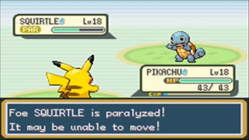
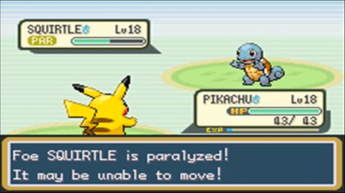

o jogo foi criado durante a participação do estudante Pyetro Machado no concurso do agrinho de 2023
com o tema de "ações que transformam o mundo"
Abaixo temos o sprite do personagem do jogo:

Este é o personagem principal do jogo, no qual seu design foi inspirado em um colega de classe de Pyetro
o sprite do personagem foi desenhado em pixel art, estilo de arte famoso em jogos eletronicos.
devido ao pequeno espaço de tela para trabalhar no personagem o desenvolvedor inseriu apenas as caracteristicas mais importantes
deixando caracteristicas mais marcantes como o chápeu e removendo outras como o rosto
assim também como no sprite da protagonista de Celeste (Jogo indie de sucesso) como pode ver abaixo:
Além de Celeste o jogo Chooses teve muitas outras inspirações
no jogo é possivel fazer escolhas que mudam o resultado final como no jogo de Toby fox, Untertale
com mecanicas de combate e de coleção de bichinhos como na franquia famosa da Nintendo Pokémon
e também ultilizando da curiosidade do jogador com a exploração do mapa como em Hollow knight.

 

No jogo o personagem principal está voltando para sua casa e se depara no meio do caminho com escolhas de ações para tomar
como limpar o lixo para a tartaruga, cuidar do cachorro e libertar o pássaro. As quais mudam a mensagem final do jogo
incentivando o jogador a fazer boas escolhas e refletir sobre as suas escolhas em na propria vida
As Ações que você pode fazer: